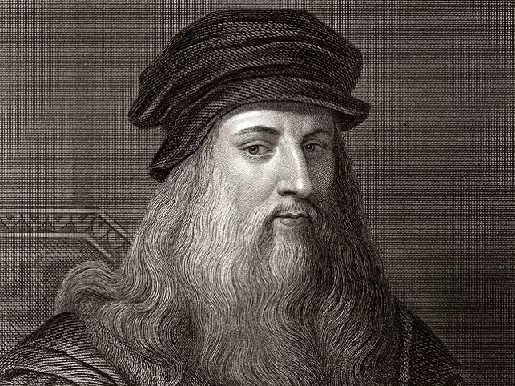
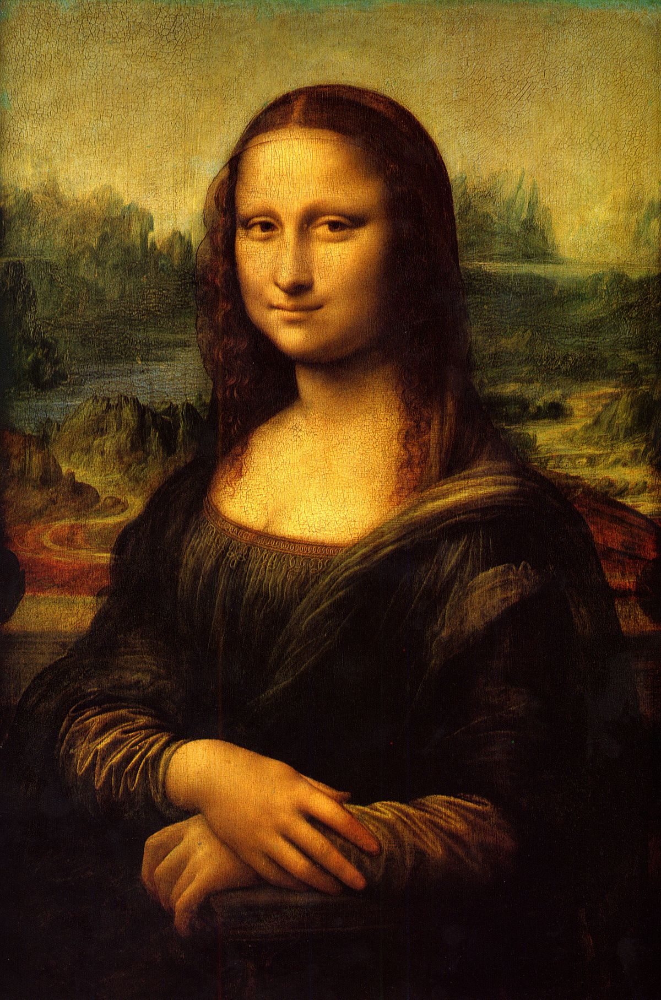
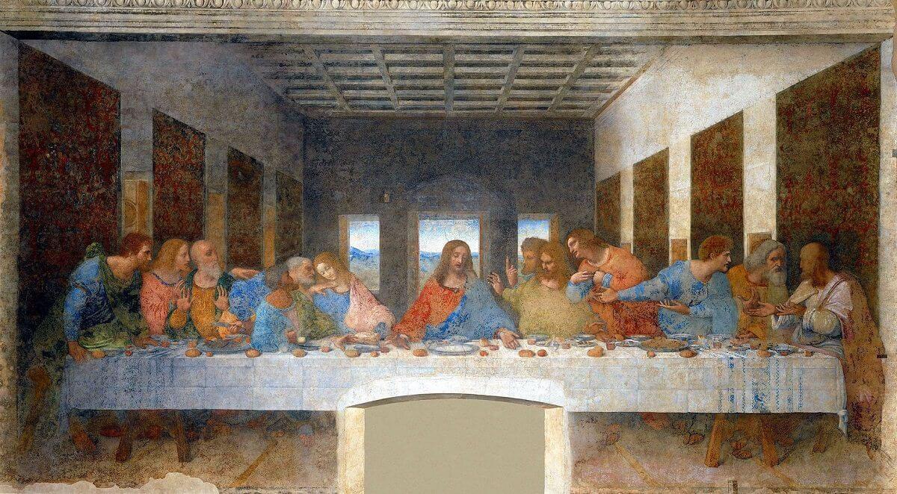
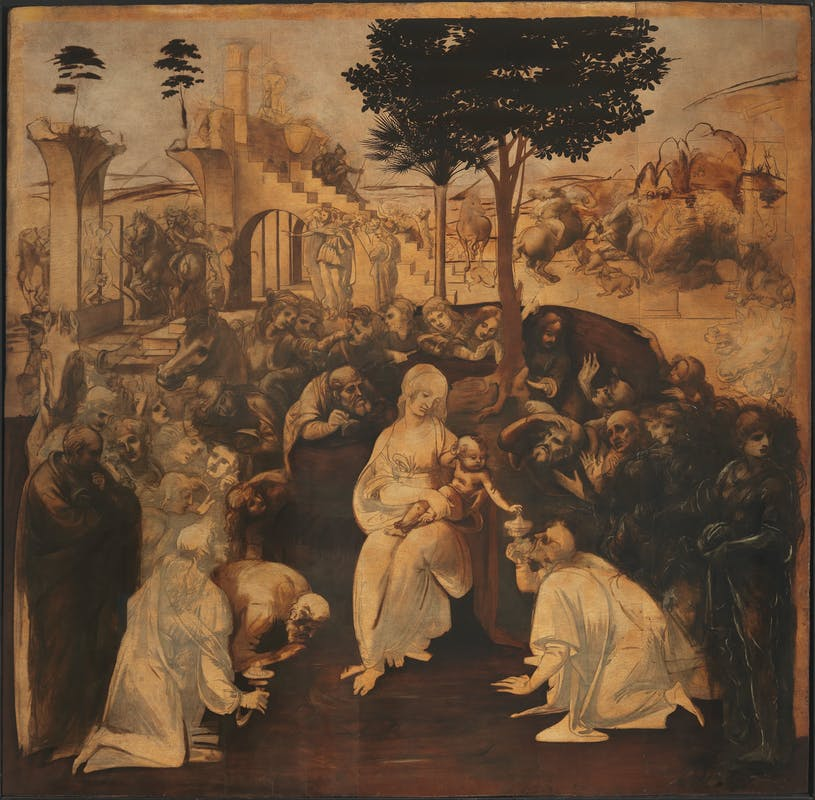
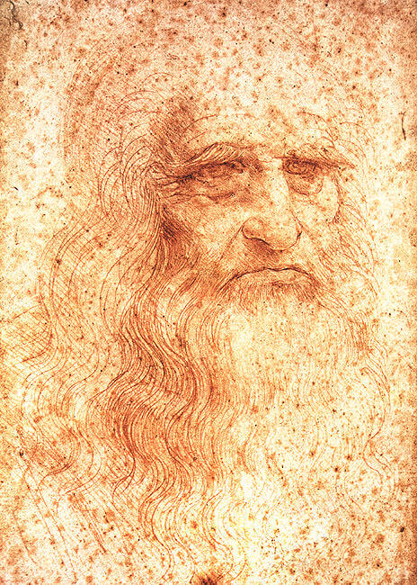
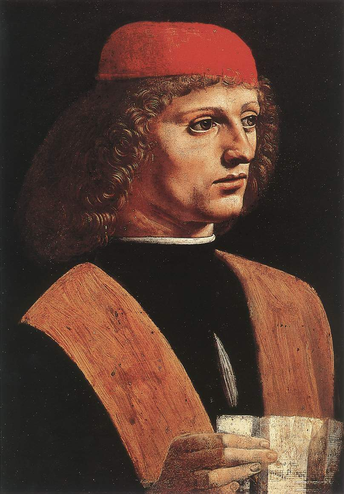

Leonardo Da Vinci (1452 - 1519) was an Italian polymath of the Renaissance whose areas of interest included invention, drawing, painting,
sculpture, architecture, science,etc...He is among the most influential artists in history, having left a significant legacy.
Da Vinci lived in a golden age of creativity among such contemporaries as Raphael and Michael Angelo,
and contributed his unique genius to virtually everything he touched.
'MONA LISA' and "THE LAST SUPPER' are some of his world famous paintings.
SOME OF HIS DRAWINGS AND PAINTINGS ARE GIVEN BELOW




